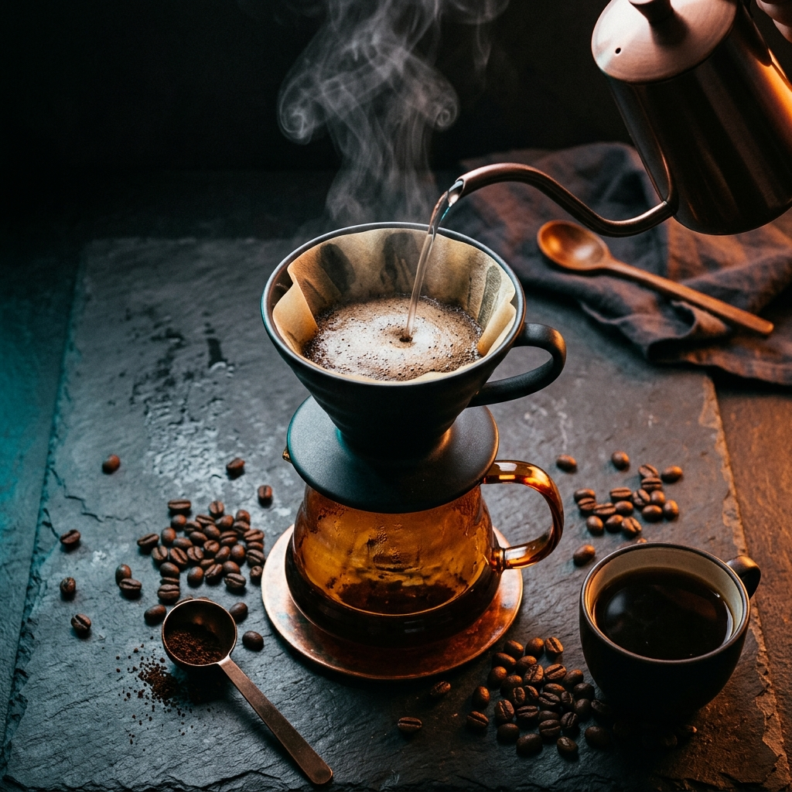

V60, Aeropress und frische Bohnen. Kaffee ist Ritual, Wissenschaft und der Treibstoff für guten Code.

Frisch gemahlen, 93°C Wasser, 2:30 Min Durchlaufzeit. Jeden Morgen den gleichen Prozess – und doch jedes Mal ein leicht anderes Ergebnis.